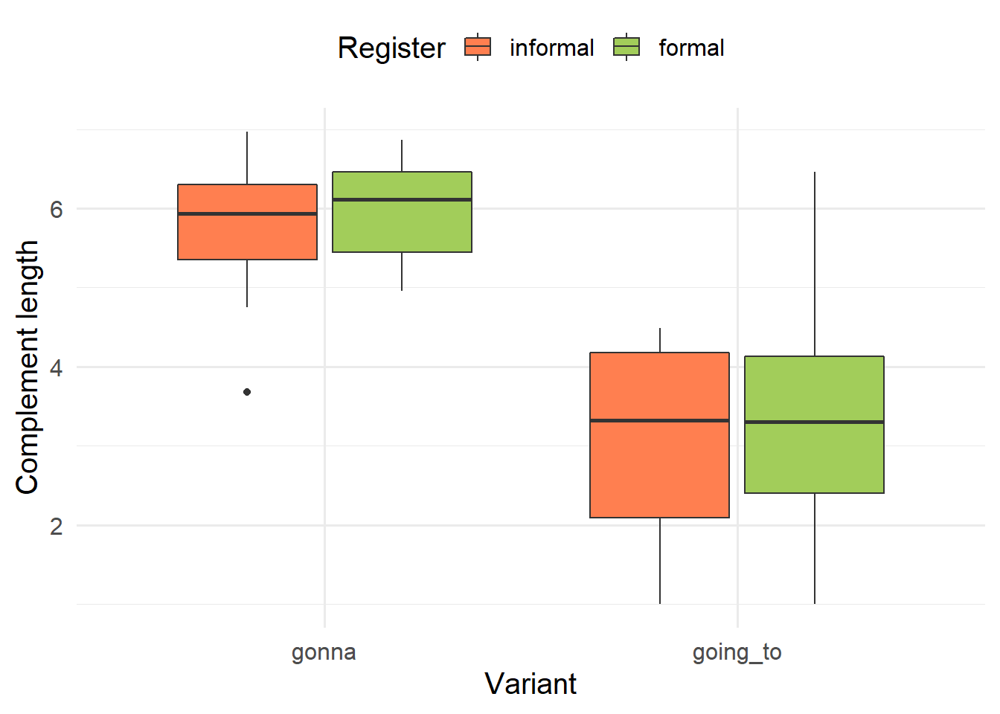

```{r}
#| label: setup
#| message: false
library(tidyverse)
library(kableExtra)
options(digits = 3) # to print up to 3 digits
url <- "https://raw.githubusercontent.com/mclm2022/mclm2022.github.io/main/slides/gonna_goingto.tsv"
gt <- read_tsv(url, show_col_types = FALSE) %>%
mutate(variant = fct_relevel(variant, "gonna"), register = fct_relevel(register, "informal"))
```Markdown and inline code
Fifth assignment
The goal of this assignment is to practice markdown formatting and inline code in Quarto.
1 Instructions
Create a branch for the assignment, e.g.
markdown. You will work here and only move your changes tomainif and when you want to submit.Create a Quarto document (don’t forget to remove its content!).
Write a coherent text that makes use of italics, bold,
verbatim, inline code and and bullet points as indicated in Section 2.2. The prompt is to describe a file you will read from an URL, as indicated in Section 2.1.Render your Quarto document into the output of your choice (word, html, pdf…).
Stage and commit all the relevant files (see Cheatsheet if you don’t remember how).
Merge the changes into your
mainbranch (see Cheatsheet).Push the changes to the remote.
Send me an e-mail so I check if it went ok.
2 Concretely…
Your Quarto report should be a description of a dataset: you will load the dataset and summarize some variables with a table and with a plot as shown in Section 2.1. Remember to use cross-references to point to them!
2.1 Data
You will start your Quarto file with a hidden chunk (include: false) in which you load {tidyverse} and {kableExtra} and open the “gonna-going to” file.
The output of gt should look something like this (but don’t print it in Quarto!):
gt# A tibble: 100 × 7
variant comp_length register variant_num source fit1 fit2
<fct> <dbl> <fct> <dbl> <chr> <dbl> <dbl>
1 gonna 6.72 formal 0 q 0.00791 0.0496
2 gonna 5.06 informal 0 x 0.348 0.137
3 gonna 5.28 informal 0 z 0.233 0.0814
4 gonna 4.84 informal 0 i 0.480 0.221
5 gonna 5.74 informal 0 m 0.0881 0.0260
6 gonna 3.68 informal 0 f 0.946 0.861
7 gonna 5.15 informal 0 j 0.297 0.111
8 gonna 6.22 informal 0 p 0.0274 0.00727
9 gonna 6.60 informal 0 p 0.0107 0.00269
10 gonna 6.19 formal 0 c 0.0294 0.174
# … with 90 more rowsThe columns fit1 and fit2 show the predicted values of the logistic regression model with only comp_length and with comp_length and register as predictors, respectively. You can use this data to obtain the Concordance Index “C” (notice you will need to install the {Hmisc} package):
# install.packages("Hmisc") # if not installed yet
Hmisc::somers2(gt$fit2, gt$variant_num)[["C"]][1] 0.984Other than describing the dataset itself, you will summarize the data in two ways: a contingency table between the variant and register columns and a boxplot that combines variant, register and comp_length. The code for both is given below. Feel free to edit them to fit your aesthetic preferences, if you want. In both cases, you may use echo: false to hide the code.
```{r}
#| label: tbl-contingency
#| tbl-cap: Contingency table between `variant` and `register` variables.
cont_table <- table(gt$variant, gt$register)
cont_table %>% kbl() %>%
kable_paper()
```| informal | formal | |
|---|---|---|
| gonna | 43 | 7 |
| going_to | 15 | 35 |
```{r}
#| label: fig-boxplot
#| fig-cap: Distribution of complement length across variants, distinguished by register.
gt %>% ggplot(aes(x = variant, y = comp_length, fill = register)) +
geom_boxplot() +
scale_fill_manual(values = c("coral", "darkolivegreen3")) +
labs(x = "Variant", y = "Complement length", fill = "Register") +
theme_minimal(base_size = 15) +
theme(legend.position = "top")
```
2.2 Tasks
The main task is to describe the dataset (particularly the table and the plot) in your own words. More concretely,
Use
verbatimto refer to variables (or column names), e.g. “Table 1 cross-tabulates thevariantandregistervariables”.Use italics to refer to values of variables, e.g. “The instances of gonna are clearly biased towards the informal
register”.Use bold to highlight concepts you will define (you may choose which), e.g. “Figure 1 is a boxplot, which represents the distribution of a numerical variable…”.
-
Use bullet points to list the names of your columns like so:
variant, with values gonna and going_to, indicating the choice between one expression or the other;comp_length, or complement length, with a minimum value of 1…
When possible, use inline code to render values of your variables into your text. This will avoid typos and, if your dataset changes, the printed output will adapt. See Section 2.3.2 for examples.
2.3 Tips
2.3.1 Markdown
See documentation.
`verbatim`
*italics* or _italics_
**bold** or __bold__
- Bullet one
- Bullet two
+ Sub bullet point
- Bullet threeverbatim
italics or italics
bold or bold
Bullet one
-
Bullet two
- Sub bullet point
Bullet three
2.3.2 Inline code
While verbatim is rendered by surrounding text with backticks, R output can be included inline by preceding the text with “r”. Here are some examples of how you could use it in the description of your dataset.
The dataset has `r nrow(gt)` observations and `r length(gt)` variables.The dataset has 100 observations and 7 variables.
There are `r cont_table["gonna", "informal"]` instances of *gonna* in the *informal*
`register`.There are 43 instances of gonna in the informal register.
The values of `comp_length`, which represents the **complement length**,
span from `r min(gt$comp_length)` to `r max(gt$comp_length)`
with a median of `r median(comp_length)`.The values of comp_length, which represents the complement length, spans from 1 to 6.969 with a median of 4.85.
The values of `variant` are *`r levels(gt$variant)[[1]]`* and
*`r levels(gt$variant)[[2]]`*.The values of variant are gonna and going_to.
The Concordance index C for the logistic regression model with `variant` as outcome
and `comp_length` and `register` as main effects
is `r Hmisc::somers2(gt$fit2, gt$variant_num)[["C"]]`.The Concordance index C for the logistic regression model with variant as outcome and comp_length and register as main effects is 0.984.
3 Git workflow
git status # check that you're on main, nothing to commit...
git branch markdown
git checkout markdown
# work on your .qmd file, render
git status # check everything is fine
git add .
git commit -m "practice with markdown and inline code"
# you may also make several commits as you add a figure, a table...
git checkout main
git status # check everything is fine. New files should not be there
git merge markdown
# Now the .qmd file, the rendered file and the help files should be present
git push
# and send me a message!